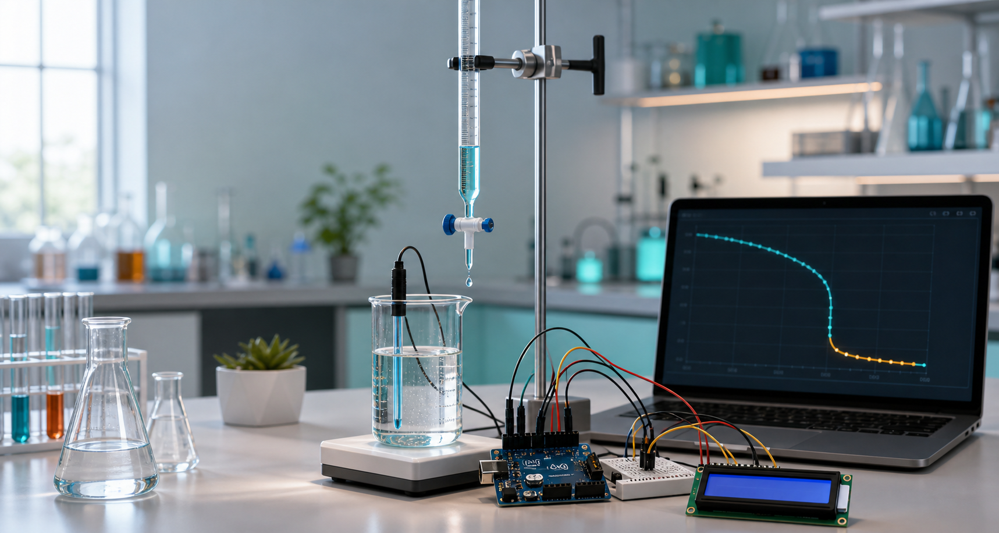

Core Idea
Automates chemical titration using sensors, Arduino, AI analysis and a web app.

Chemistry + Electronics + AI
Connect your Arduino, collect live pH readings, visualize the pH-volume curve, detect the equivalence point, and auto-grade the experiment result.
Live experiment
Use Chrome or Edge. The browser receives serial data directly from Arduino through USB.
Add readings to let the AI-style slope detector identify the equivalence point.
Complete project coverage
Automates chemical titration using sensors, Arduino, AI analysis and a web app.
Arduino UNO, pH probe, servo motor, I2C LCD, LED, buzzer, breadboard, resistor, wires and USB cable.
Arduino code reads pH, controls servo/LED/buzzer/LCD, and sends readings to this web dashboard.
The pH-volume curve helps identify the endpoint visually during the titration process.
The app detects the equivalence point by finding the maximum slope in the pH curve.
The dashboard compares detected results with expected values and gives marks out of 10.
Complete workflow
Arduino setup
Open arduino/smart_titration_system.ino in Arduino IDE, install the LCD library,
upload it to Arduino UNO, then connect from this dashboard.
A0D9D6D7SDA/SCLProject notes
Useful for schools, colleges, chemistry labs, research experiments and virtual labs. Calibration is required for accurate pH readings, and future versions can add IoT monitoring, a mobile app and a fully automatic burette.